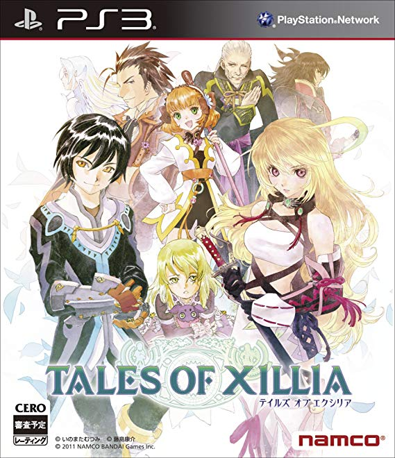

テイルズオブエクシリア
 2011年9月8日発売プラットフォーム：PS3
シリーズ第13作目。
シリーズ初のW主人公が採用されており、開始時にどちらの視点でストーリーを進めるか選ぶこともできる。反面、片方の主人公の視点だけでは分からない部分もあり、両方をプレイする（＝少なくとも二周プレイする）ことを前提に作られているとも言える。
戦闘は2人のキャラクターを同時に操作するリンクモードが特徴的。パートナーキャラ別に固有のサポートスキルが存在しており、操作キャラはその恩恵を得ることができる。また、リンクアーツと呼ばれる合体技が使用可能になる。
本作は男性主人公の“ジュード”と女性主人公の“ミラ”を選択してストーリーを進めていく。選択した主人公によってストーリーは変わらず、視点が変わるだけであるため、選ばれなかった主人公もメインキャラクターとして登場する。16歳で学生のジュード、20歳だが特殊な生い立ちのミラ、年齢も立場も全く違う彼・彼女たちそれぞれの成長や心情の変化が見られることが特徴となっている。また、余談に近くなってしまうが、本作の料理は首を傾げたくなるようなメニューが多い。更に、アイテムとして存在してはいないが、過去作品でマスコットキャラクターのような役目を果たしたキャラクターと同じ種族が食材として使われているメニューの存在が確認できるという、その作品を知っていると中々にショッキングな場面がある。